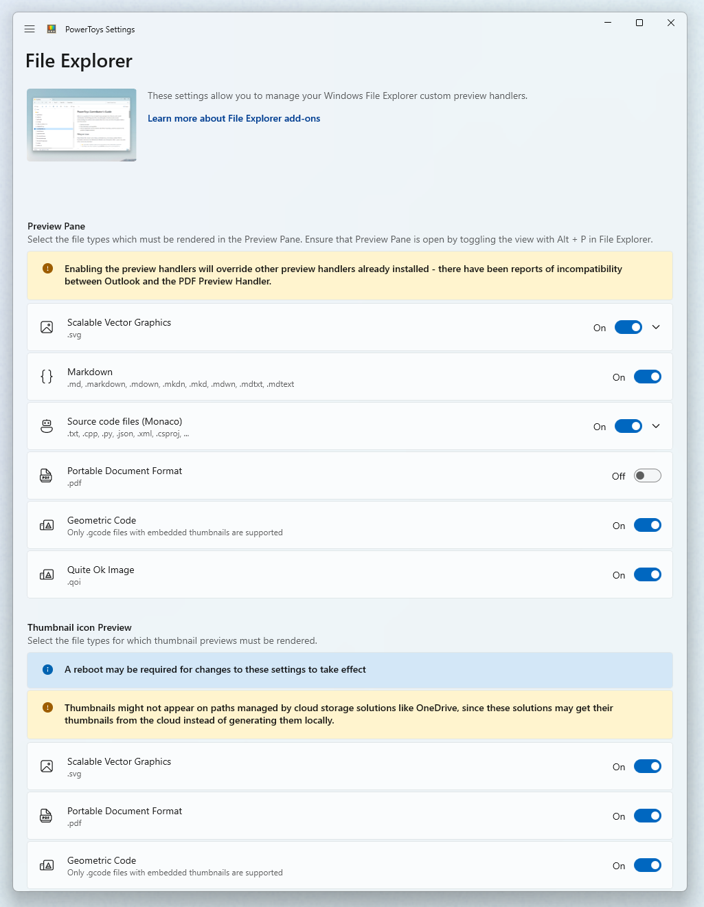
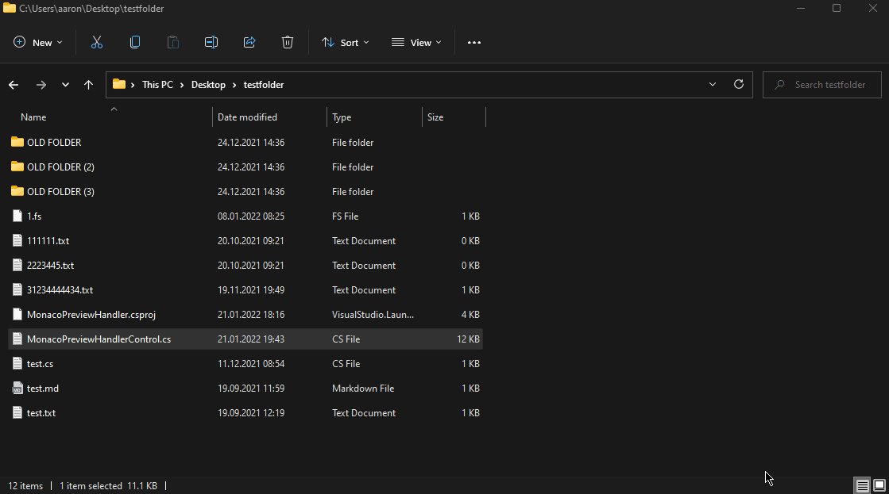
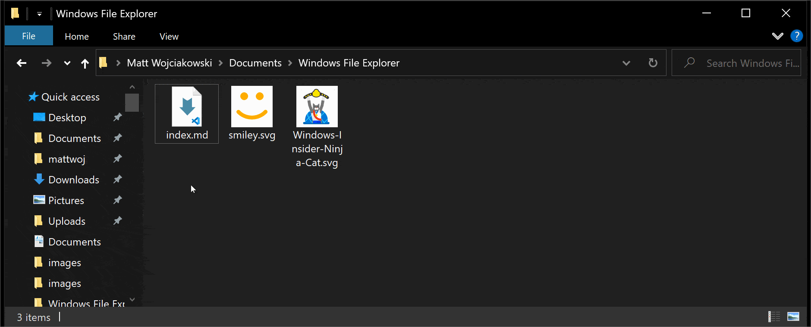

File Explorer add-ons utility
PowerToys File Explorer add-ons enhance Windows File Explorer with preview pane and thumbnail support for multiple file types including SVG, PDF, Markdown, and source code files. These utilities allow you to preview file contents directly in File Explorer without opening separate applications.
Warning
Enabling the preview handlers will override other preview handlers already installed - there have been reports of incompatibility between Outlook and the PDF Preview Handler.
Preview Pane previewers
Preview Pane is an existing feature in Windows File Explorer which allows you to see a preview of the file's contents in the view's reading pane. PowerToys adds multiple extensions: Markdown, SVG, PDF, G-code and QOI. In addition to those, PowerToys also adds support for source code files for more than 150 file extensions.
Preview Pane supports:
- SVG images (.svg)
- Markdown files (.md)
- Source code files (.cs, .cpp, .rs, …)
- PDF files (.pdf)
- G-code files (.gcode)
- QOI images (.qoi)
Settings for Source code files previewer
Expand the Source code files (Monaco) section to change the following settings.
| Setting | Description |
|---|---|
| Wrap text | Enable or disable word wrapping. |
| Try to format the source for preview | Enable or disable formatting of the source code for json and xml files. The original file stays unchanged. |
| Maximum file size to preview | Maximum file size in kilobytes to preview. |
Enabling Preview Pane support
To enable preview support, set the extension to On.

If the preview pane does not appear to work after setting the extension to On, there is an advanced setting in Windows that may be blocking the preview handler. Go to Options in Windows File Explorer and under the View tab, you will see a list of Advanced settings. Ensure that Show preview handlers in preview pane is selected in order for the preview pane to display.
Enabling the Explorer pane in Windows 11
Open Windows File Explorer, go to View in the Explorer ribbon and select Preview pane.

Enabling the Explorer pane in Windows 10
Open Windows File Explorer, go to View in the Explorer ribbon and select Preview Pane.

Note
It isn't possible to change the background color of the preview pane, so if you're working with transparent images with white shapes, you may not be able to see them in the preview.
Thumbnail previews
To enable thumbnail preview support, set the extension to On.
Thumbnail preview supports:
- SVG images (.svg)
- PDF files (.pdf)
- G-code files (.gcode)
- STL files (.stl)
- QOI images (.qoi)
Note
A reboot may be required after enabling the thumbnail previewer for the settings to take effect. Thumbnails might not appear on paths managed by cloud storage solutions like OneDrive, since these solutions may get their thumbnails from the cloud instead of generating them locally.
Settings for Stereolithography (.stl) files
Expand the Stereolithography section to change the background color.
Install PowerToys
This utility is part of the Microsoft PowerToys utilities for power users. It provides a set of useful utilities to tune and streamline your Windows experience for greater productivity. To install PowerToys, see Installing PowerToys.